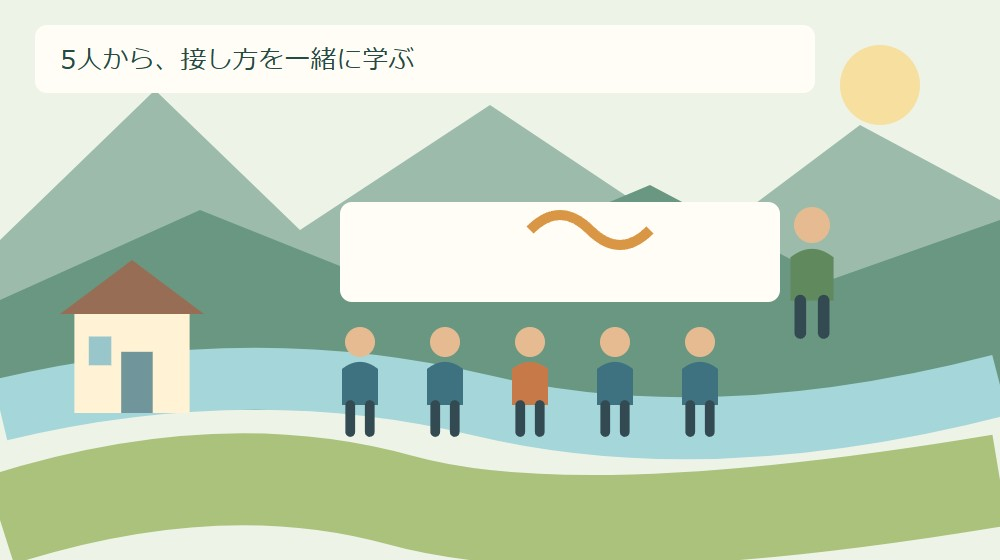
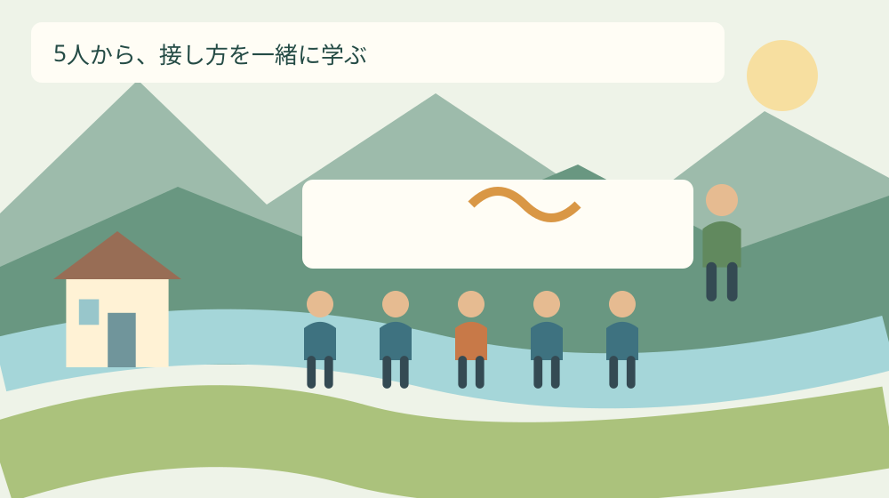
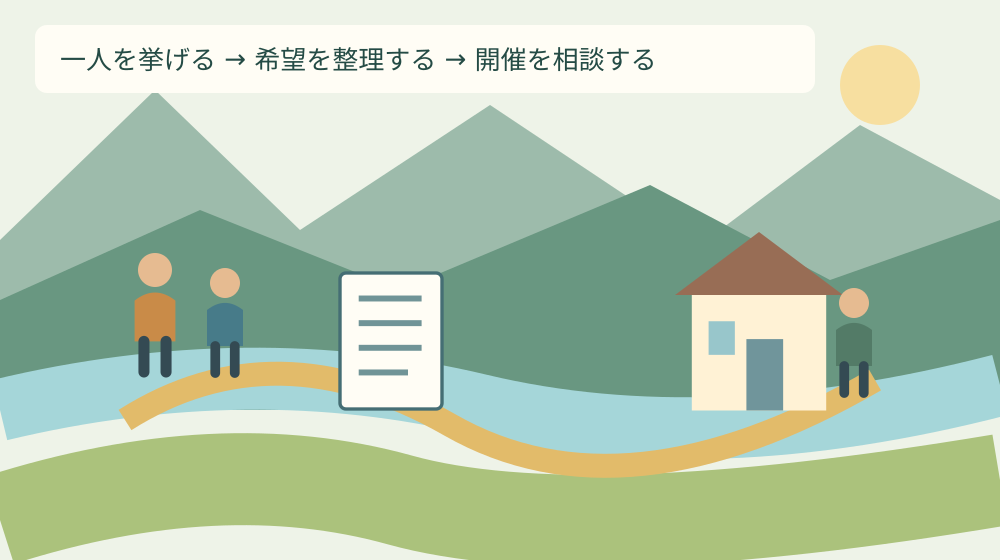

手続き・制度
森町の認知症サポーター講座｜5人から学ぶ

Q. 森町で認知症の人への接し方を、職場や町内会で学べる？
A. 森町の認知症サポーター養成講座は、5人以上の団体等へ出前で対応し、所要時間は約90分（応相談）です。申込みは福祉課の窓口または電話へ。2026年9月21日に町の掲載案内を確認しました。開催日や費用等は申込時に確かめ、今日は一緒に受講したい人を一人挙げてください。
家族だけに接し方の工夫を背負わせない
家族が同じ説明を繰り返し、職場では忙しい時間にも相手の様子を見て応じる。町内会では、顔を合わせた人が気にかける。認知症のある人の暮らしは、本人の工夫と周囲の時間に支えられています。学ぶ話は、その積み重ねを認めるところから始めたいと思います。
森町で接し方を学ぶ入口の一つが、認知症サポーター養成講座です。家族が困ってから一人で勉強するだけでなく、同じ職場や町内会で一緒に聞くことができます。この記事は、受講を考える人が人数と準備を整理するための案内です。
私は大石浩之（磐田市／不動産業）です。ここでは講座へ参加した体験を語るのではなく、町の案内を読み、担い手が動ける準備をどう組むかという私の考えを書きます。診断や治療の判断、個別の介護方法をこの記事で決めるものではありません。
厚生労働省の2026年度案内では、9月21日は認知症の日、9月は認知症月間です。2026年9月21日の今日を、開催を急いで決める日ではなく、誰と学びたいかを考える日にできます。記念日と森町の講座開催日は同じ意味ではありません。
事実整理｜5人以上・約90分の出前講座
森町「介護予防教室について」の講座欄には、5人以上の申込みで開催するとあります。正式な掲載名は「認知症を学ぼう講座（認知症サポーター養成講座）」です。団体等への出前対応で、認知症の知識や具体的な接し方を学ぶ内容と案内されています。
所要時間は約90分で、時間は相談できる扱いです。対象はどなたでもとされ、町内会、職場、学校、シニアクラブ、各種グループが例示されています。介護の仕事をしている人だけを対象にした専門研修、と読み替える必要はありません。
申込みは福祉課窓口または電話です。掲載問い合わせ先は福祉課地域包括支援センター係、0538-85-6341。希望する団体や事業所には受講証を発行するとあります。発行を希望するときは、申込みの際に必要な準備も確認してください。
意外に感じるのは、大きな講演会を開く人数を集めなくても相談の入口がある点です。ただし「5人以上」は申込条件であり、5人集まれば希望日の開催が自動的に決まるという意味ではありません。人数を満たすことと日程調整は分けて考えます。
町のページの更新日は2024年5月17日で、添付案内にも2024年度の表示があります。この記事では2026年9月21日に掲載本文を確認しました。2026年度の日程や個別の受入状況まで確認できたとは扱わず、実際の開催条件は窓口へ確かめます。

申し込む前に決めるのは、会場より学びたい場面
受講準備では、最初に「どんな場面で迷うか」を一つ選ぶ方法を私は勧めます。例えば、店の説明を繰り返す場面、町内会の連絡を渡す場面、家族が外出の予定を話す場面です。これは講座の正式な申込項目ではなく、希望を伝えるための整理です。
準備する質問は、相手の行動を評価する文より、自分が困っている対応を書く方が伝わります。「何度説明しても分からない人がいる」ではなく、「同じ質問を受けたとき、説明の仕方を学びたい」と書く。私は学ぶ目的を後者に置きたいと考えます。
職場なら、研修の代表者が誰かと、当日の仕事を誰が担当するかを別に決めます。店を開けながら全員が同じ90分に参加できるとは限りません。交代制や別日程を希望するときは、対応可能かを町へ相談し、実施できるものとして予定を確定しないようにします。
町内会なら、参加したい人の返事を集める担当を一人決めるだけでも準備は進みます。声をかける際に、特定の世帯の事情を受講理由として説明する必要はありません。「地域で接し方を学びたい」という目的で、希望と都合を尋ねられます。
森町の暮らしでは、90分の前後にも段取りがある
森町で受講を組むときは、90分の講座だけでなく、会場へ向かう移動や留守番も予定に入れます。これは町内の移動時間を一律に見積もる話ではありません。参加する人の出発場所や家族の予定で、必要な時間が変わるという準備上の話です。
家族が介護を担っている場合、学ぶために外出する間の対応が気になります。参加したい気持ちがあっても、本人を置いて出られないことがあります。私は参加できない理由を意欲の不足にせず、家族の交代や相談先を考える材料にしたいと思います。
森町「高齢者のための相談窓口」は、本人や家族、地域の人からの相談を案内しています。介護の疲れや悩みも対象です。講座は知識を学ぶ場、個別相談は暮らしの困りごとを伝える場と、目的を分ければ人数集めの間も相談を保留せずに済みます。
相談を始める順番は、親の介護が始まったときの最初の相談先でも整理しています。私は、本人や家族の困りごとが先にあるなら、講座の開催を待たずに相談内容を一行書く方を勧めます。学ぶ準備と生活の相談は並行できます。
窓口の所在地は森町保健福祉センター内、森町森50番地の1です。相談窓口の通常受付は平日8時30分～17時15分で、祝日と年末年始を除くと案内されています。訪問や電話の前に受付日を確かめ、今日できることは希望をメモするだけでも構いません。
良い点｜職場や町内会が同じ入口で学べる
森町の講座の良い点は、出前対応と幅のある対象者の案内が組み合わさっていることです。私は、家族だけに説明役を負わせず、職場や地域の人も知識を学ぶ入口がある点を評価します。家族が各人へ一から説明し続ける以外の方法を考えられます。
5人以上という人数も、身近な集まりで検討しやすい条件だと私は感じます。開催の可否を保証する数字ではありませんが、町全体へ一斉に呼びかける企画から始めなくてよい。既に話せる相手へ、受けたいかを尋ねるところまで準備を小さくできます。
約90分という目安が示されていると、仕事や家族の予定と照合できます。私は「短いから負担はない」とは考えません。時間の目安が分かるからこそ、参加できる時間帯や交代の必要性を具体的に聞ける点に意味があると受け止めています。
受講証の案内は、事業所が学習の実施を記録したい場合の確認材料になります。ただ、私が成果として見たいのは紙を持つことだけではありません。職場で迷った際の相談先や、相手の話を聞くための余裕を、受講後にどう残すかまで考えたいところです。
注文したい点｜掲載条件と開催決定を分けたい
森町の掲載案内と、個々の団体の開催決定は別です。私は町の講座を利用しやすくするには、人数の条件だけでなく、会場、費用、申込みから開催までの調整について、最初の連絡で確認できる形があると助かると考えます。現時点の本文だけでは確定できません。
同じページにある別の教室の参加料や年齢条件を、認知症サポーター養成講座へ転用しないよう注意が要ります。私は費用を「無料」と決めつけず、資料代や会場に関する負担の有無も質問に入れます。家計の準備に関わる条件は曖昧なまま残したくありません。
会場を借りる前に、設備の条件と候補日の調整方法を聞くのが私の提案です。机や椅子、投影設備、会場の広さが何に必要かは実施側の案内に従います。予約や支払いを先に済ませ、後から条件が合わないと分かる手戻りを避けたいと考えます。
担い手の負担という点では、企画を始めた人が出欠、会場、当日の案内を全部抱える形が気になります。今日は協力を頼めそうな人を一人挙げ、引き受けられる作業を尋ねる。それができなければ、開催規模や時期を保留して相談する選択も残します。

対案・結論｜今日は一緒に受けたい人を一人挙げる
今日の一歩は、一緒に受講したい人を一人挙げることです。家族でも、職場の同僚でも、町内会で話せる人でも構いません。その人が参加すると決まったと扱わず、「接し方を一緒に学ぶことに関心があるか」と聞くための候補にします。
次に、学びたい場面を一行だけ添えます。「職場で説明を急がずに伝える方法を知りたい」など、自分たちの対応を主語にします。具体例を思い浮かべても、本人の名前、病名、家の場所を書き込んで回覧する形にはしない、というのが私の提案です。
人数の見込みができたら、希望人数、候補日、会場候補、連絡担当を一枚にします。正式な申込書を出す前の準備メモです。未定の欄は未定のままにして、福祉課へ必要事項と提出方法を確認します。分からない項目を推測で埋める必要はありません。
人数が5人に届かない場合は、その現状を伝えて受講の方法を相談します。合同開催や個人参加ができるとこの記事で約束はできません。だからこそ、無理に誰かを動員する前に質問します。家族の事情を説明して人数を集める方法は、私は勧めません。
講座の連絡担当と、個別相談をする本人や家族は同じでなくても構いません。職場の研修連絡に介護の詳細まで載せる必要はないと考えます。共通の学習希望と、個人の生活上の相談を別のメモにすれば、伝える範囲を選びやすくなります。
家族に残す記録と、広げない情報を分ける
受講の記録は、開催日、学んだ内容、後で確認したい質問、相談先に分ける方法を私は提案します。家族の記録なら、誰がその紙を見られるかも決めます。学んだことを残すための紙と、本人の医療や生活の情報を保管する紙は同じ扱いにしません。
見守りに関する準備を考えるなら、森町の見守りSOS登録の記事が別の入口になります。この記事の目的は受講です。講座を受けることと登録の手続きを済ませることを、家族の記録でも別々に確かめてください。
お金や契約、財産管理の心配がある場合は、森町の成年後見制度の相談先も確認材料になります。講座で知識を得たことだけで、家族が本人に代わってあらゆる契約をできると考えないよう、専門的な判断は相談へつなぎます。
本人に関する記録を共有するときは、何を誰に渡すかを本人や関係者と確かめるのが私の提案です。近隣に役立つ連絡先と、口座や鍵の情報は必要性が違います。学ぶ仲間が増えたからといって、私生活の情報を広く知らせる方向へ進める必要はありません。
大石の視点｜担い手の時間まで含めて考える
私は、制度があるという紹介だけでは家族の負担は減らないと考えます。学ぶ入口を用意するなら、人数集めと留守番の段取りまで見る。受講の代表者を決めた後に、その人の仕事だけが増えるなら、担い手が実際に回せる仕組みになっているかを考え直します。
不動産の目線でも、住み慣れた家があることと、そこで暮らし続けられることは同じではありません。移動や連絡、家族の時間が重なって生活が成り立ちます。私は講座の案内を、住まいを売るか残すかという判断へ急いで結び付けず、暮らしの準備として読みたいと思います。
一方で私には、5人を集める提案が、既に疲れている家族へ新しい役目を渡してしまわないかという迷いがあります。だから最初の行動を、開催の約束ではなく一人の候補にとどめました。受講するかを決められなくても、相談先を一つ残すことはできます。
森町の人が続けてきた見守りや日々の声かけを、知識がなかったと否定する話にはしたくありません。既に払っている時間を認め、その上で接し方を学ぶ方法を一つ足す。私は、その順番で町の講座を紹介します。担い手の善意だけへ追加の負担を積まないためです。
受講後は一つの確認を日常へ戻す
受講後の確認は、職場や家庭で何を一つ試し、何を専門窓口へ質問するかを分ける方法が考えられます。ここで提案するのは治療や介護技術ではありません。講座で聞いた内容をそのまま自己流で広げず、不明な点を残して確認するための記録です。
参加できなかった人へ伝える際は、講師が示した資料の扱いを確かめます。自分の感想を町の正式な説明のように言い換えないよう、資料と感想を分けます。職場で共有するなら、学習内容に加えて、個別の判断が必要なときの連絡先を残すと使いやすくなります。
認知症の日に、一度で地域の課題を解決する必要はありません。森町には5人以上で相談できる学びの入口があります。今日は一緒に受講したい人を一人挙げる。開催条件は町へ確かめ、個別の悩みは人数がそろう前から相談する。その二つの動きを分けて始めます。
よくある質問
受講や申請を考える際の確認を、質問ごとに整理します。
一人でも講座を申し込めますか？
森町の掲載案内では、団体等への出前講座は5人以上の申込みで開催します。一人で受講したい場合の参加方法や、別の団体と合同で受けられるかは、この条件だけでは分かりません。福祉課地域包括支援センター係へ希望を伝えて確認してください。人数集めのために、家族の病状を地域へ知らせる必要はありません。
講座は何分で、どこへ申し込みますか？
町の案内は約90分、時間は応相談としています。申込みは福祉課窓口または電話です。掲載問い合わせ先は地域包括支援センター係、0538-85-6341。希望人数、候補日、会場候補、学びたい場面をメモして相談してください。希望日に開催できるか、会場設備や費用がどうなるかは個別に確かめます。
家族の介護の悩みも講座の申込みまで待つべきですか？
介護の疲れや暮らしの心配は、講座の開催とは分けて森町地域包括支援センターへ相談できます。町は本人、家族、地域の人からの相談を案内しています。5人集まるまで悩みを保留する必要はありません。講座では知識を学び、個別の生活や介護の相談は必要な範囲で別に伝えると、目的を整理しやすくなります。

公式情報源
2026年9月21日確認。制度・数値は変更される場合があります。個別の適用は担当窓口へ、医療・税務・法律等の専門判断は各専門家へ確認してください。